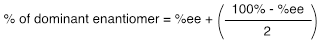
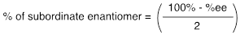

Mathematically, the percentage of each enantiomer can be expressed as follows:
and
For both equations, the numerator of the term in parentheses relates to the optically inactive portion of the sample. Halving this value provides the percentage of the enantiomer present in lesser amount. This same value needs to be added to the %ee to provide the percentage of the dominant enantiomer.
The % ee can also be calculated if the composition of the mixture is known. The enantiomer present in smaller number is subtracted from the dominant enantiomer. Consider a sample that contains 35% of the dextrorotatory enantiomer and 65% of the levorotatory component. The % ee is then (65% – 35%) = 30%.
−